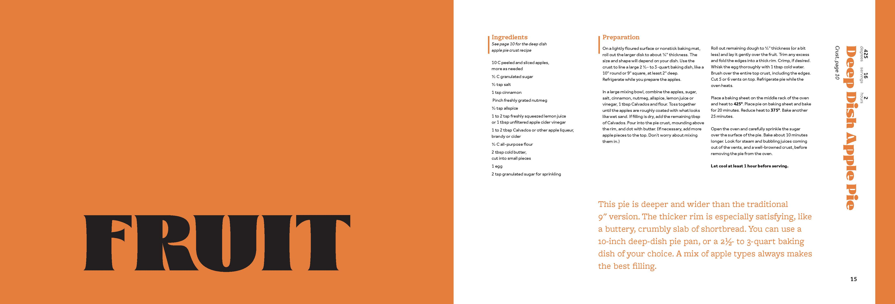
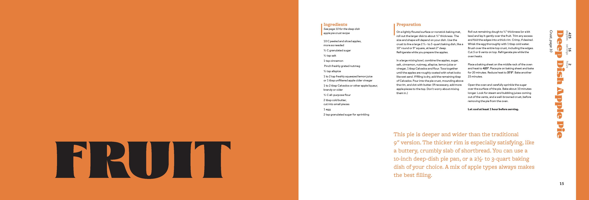

Tori Richner
Baltimore based Graphic and UI Designer
When I first began my graphic design adventure I only had a little self taught knowledge of Photoshop and was beginning to learn about Illustrator and the importance of vector vs. raster. I would use existing businesses and create new logos and designs to help improve my knowledge of Photoshop. I created this Game Boy Color image as my first project in Illustrator, it helped me learn how to use the pen tool and other tools within Illustrator.

After graduating from AACC with my Associates, I moved on to UMBC where I became a Coordinator of Graphic Design for UMBC's Student Government Association. I was given the opportunity to create various social media designs for many different events.


Thankful Thanksgiving Question-02.jpg)


During this time, I was also given the privilege of creating the logo for a friend's restaurant that was in the works of opening.
I continued honing my design skills with in class projects.


 

where I began learning more about UI/UX design and had my first project in Adobe XD, a recreation of a website that exists.

This started in furthering my interest in interface, interactive, web, and mobile design which started my app, Root Cellar! This is an app idea I had based off the common issues myself and others have faced especially when living with others and sharing a communal space. With this app you can track the items in your kitchen and have live updates of changes that you or others connected to your household can make.


Now in my last semester of obtaining my BA with a concentration in Graphic Design, I'm continuing to hone and improve my skills and plan on pursuing a masters in UI/UX design. This short portfolio will be the first of many coding projects as I continue improving to be an inclusive designer. I will update and improve this portfolio as my skills do to create a site that grows as I do.